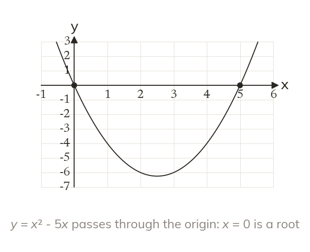

No constant term means a factor of x
With no constant term, x is a common factor. So x = 0 is always one solution.
When a quadratic has no constant term, x is a common factor of every term. Taking it out means x = 0 is always one of the solutions.